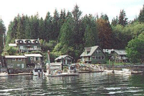
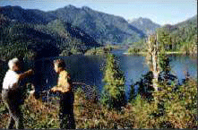
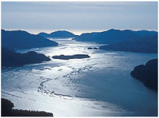

Central Island
Whale watching, moutain, lakes, streams, waterfalls, wildlife, and forests, Central Island will not dissapoint you.
Bamfield:
Bamfield is famous with its harbour-view. Wildlife excursions, woodland tours, birdwatching and boating are available in here.
Tofino and Ucluelet:
 Beautiful moutain lakes, streams, waterfalls, wildlife, and forests can be found in these two towns.
Whale watching is very entertaining. All visitors are strongly suggested to see it when they visit Tafino and Ucluelet.